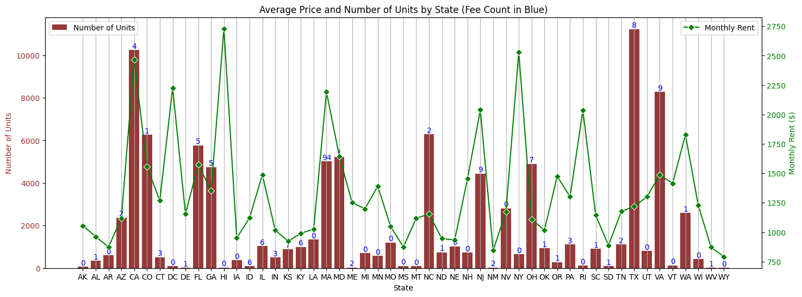

Apartment Rental Analysis (EDA)
Exploratory Data Analysis · Trend Analysis · Feature Relationships · Data Visualization

Python
Pandas
NumPy
Visualization
EDA
Time Trends
Analyzed a dataset of apartment availability and listing attributes to understand what drives rental prices,
identify seasonal patterns, and surface practical insights for renters and market planning.
GitHub Repo
Problem Statement
Rental markets are influenced by location, supply dynamics, and seasonality. Renters often want answers to practical questions:
When is the best time to search? Which cities tend to be most expensive? What listing attributes consistently increase rent?
The goal of this project was to translate raw listing data into actionable insights about pricing drivers and market trends.
Data
Used a dataset containing apartment availabilities from December 2008 to December 2009, with ~100,000 records and 22 features.
- Time period: Dec 2008 – Dec 2009
- Size: ~100K records
- Features: listing attributes (e.g., bedrooms, bathrooms, size), location/city, pricing, and related metadata
Approach
I performed a structured EDA workflow to clean data, validate assumptions, and quantify relationships between rent and key features.
- Data cleaning (null handling, outliers, type fixes)
- Univariate analysis of rent distributions and key numeric fields
- Feature relationships (rent vs bedrooms, size, location, etc.)
- Seasonality analysis over time (monthly trends and shifts)
- Segmented analysis by city/market to compare rent levels and variability
Key Findings
Seasonality
Identified periods where rent/availability patterns shifted meaningfully.
Top Price Drivers
Quantified which listing attributes most strongly influence rent.
Market Differences
Compared high-cost vs lower-cost cities and variability over time.
- Rent increases were strongly associated with key features such as size and bedroom count (with market-specific variation)
- Certain cities consistently exhibited higher rent distributions and greater variance
- Time-based trends suggested seasonal market behaviors affecting availability and/or pricing
Visualization & Reporting
Produced visual summaries and charts to communicate findings clearly, including distribution plots, time trend charts,
and segmented comparisons by city and key listing attributes.
- Rent distribution and outlier inspection
- Rent vs size/bedrooms comparisons
- Monthly/seasonal trend plots
- City-level comparisons (median, spread, and rank)
Challenges & Limitations
- Data may reflect listed rents rather than signed lease prices
- Location granularity may be limited (city vs neighborhood)
- Short time range (1 year) limits longer-term market conclusions
Extensions & Future Work
- Build a rent prediction model (regression) with calibrated confidence intervals
- Add neighborhood-level data and external signals (CPI, interest rates, job growth)
- Create an interactive dashboard for renters (best time to search, city comparisons)
Key Takeaways
This project strengthened my ability to translate large, messy datasets into clear insights through structured EDA and visualization.
It also reinforced how to frame analysis around real user questions and communicate conclusions for decision-making.